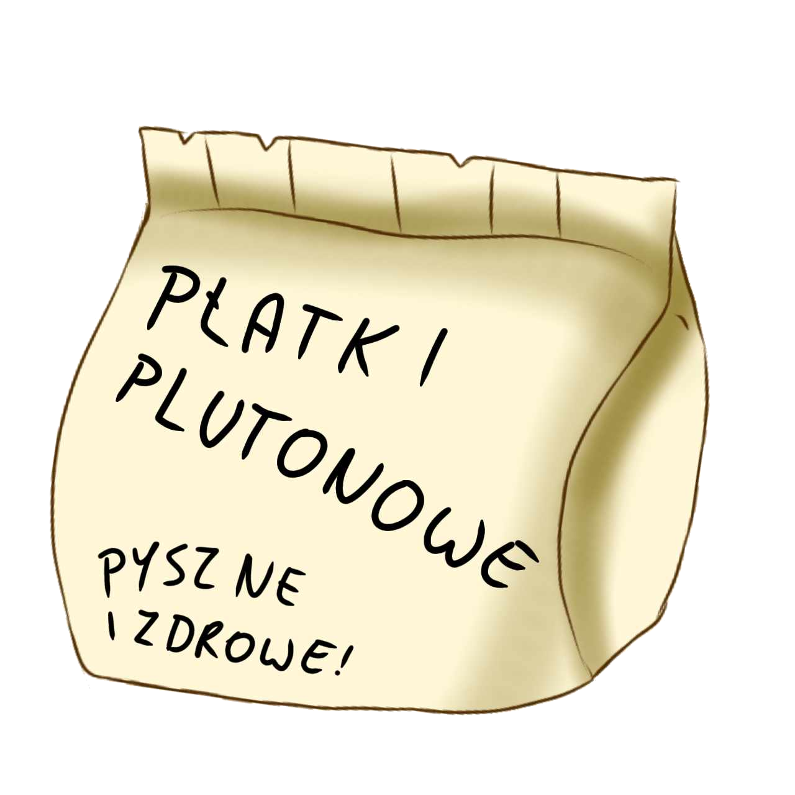
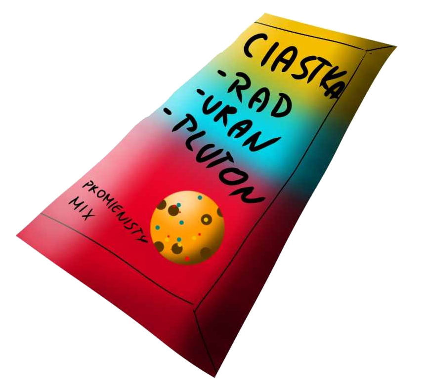

Płatki plutonowe
Dowiedz się więcej!Zawierają 10% plutonu, który pobudza wyobraźnię i rozwesela.

Ciasteczka z radem, plutonem i uranem
Dowiedz się więcej!Zawierają po 1% każdego pierwiastka, który łączy wszystkie zalety płatków.